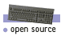
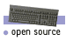

| Directory
| ||
| Developer's Toolbox Developer News DevEdge Email KnowledgeBase Developer Consulting | ||
| Useful
Links Freeware Video Server Toolkit Year 2000 Technical Publications Library Application Solution Center | ||
| Programming
Rules Example Code Glossaries | ||
| Developer
News DevEdge What's New Feature Stories | ||
| | ||
Localization at SGI
Essentials - Frequently Asked Questions
1. What is a locale ?
A locale specifies both the specific country (region/territory) and the
culture (language) (for example: fr_CA and fr_FR). The information has a
format of date and time, currency unit, messages, encoding and so on.
There are locale databases for each locale. When you want to use a certain
country/language environment with applications, you have to change the
locale.
Locale name format is,
"language[_territory[.encoding]][@modifier]".
(e.g.
hu , en_US , en_CA , ko_KR.euc )
Each locale has several categories including: LC_CTYPE ,
LC_NUMERIC , LC_CTYPE , LC_NUMERIC
, LC_TIME , LC_COLLATE ,
LC_MONETARY , LC_MESSAGES , and LC_ALL
(LC_ALL is a special category that represents all categories.)
2. What environment variables on the system define the locale setting?
Applications (and libraries) that are internationalized correctly refer to some environment variables related to locale. They are ...
LC_CTYPELC_NUMERICLC_TIMELC_COLLATELC_MONETARYLC_MESSAGESLC_ALL (sets all categories to specified locale)
You can set a locale for each category. If a locale is not set in a
specific category's environment variable, LANG environment
variable is used for the category's locale. Further if a locale is not set
in LANG environment variable, "C" locale (7 bit ASCII) is
used.
IMPORTANT: Applications should not examine these variables directly.
In C code, you should always use setlocale( < category
>, NULL ) to determine the settings for the various
categories. In shell scripts, you should use the
locale(1)command to determine the settings for each of the
various categories.
One CANNOT assume that any category has the same value as LC_ALL
or $LANG. Consider the following specification:
/en_US/de/de/de/de/en_US
Each category is different despite the fact that none of the LC_*
environment variables are set. The setlocale function and the
locale command will correctly pick all of the various pieces apart.
Programs should seldom query LC_ALL. For example, if you want to look
up messages or HTML files, you should use LC_MESSAGES
instead.
3. What code fragment should you put at the beginning of each application or library to ensure that locale, etc. is correctly set ?
For Non-Xt/Motif based programs:
#include< locale.h >...main(int argc, char* argv[]){/* Some variables */(void)setlocale(LC_ALL, "");...
For Xt/Motif based programs:...main(int argc, char* argv[]){/* Some variables */XtSetLanguageProc(NULL, NULL, NULL);...
Or you can use your own procedure:#include< locale.h >...main(int argc, char* argv[]){/* Some variables */XtSetLanguageProc(NULL, _myXtDefaultLanguageProc, NULL);...
4. When do you use message catalogs and when do you put strings in app-defaults files ?
Message catalogues are used by non-Xt/Motif based programs. Xt/Motif based programs use resource files, but they also can use message catalogues.
Most user interface components have static values, so a simple X resource setting is sufficient. To use UI components with values that change at runtime, one can either: 1) define multiple X resources for all of the possible values; 2) use a message catalog to determine all of the possible values In either case, you will need additional code to change the value at runtime. Unless your application already uses a message catalog for some other purpose, it is probably best to use X resources so that all messages remain in a a single location.
5. If you need to write shell scripts which can post notifiers, where should the text for those notifiers go? Should we have a standard shell script fragment that supports accessing correct text for notifiers, according to the locale?
You can use the gettxt command to get messages from message catalog
files in shell scripts.
For example:
#!/bin/shmessage=`gettxt catalog_file_name:message_number_1`button=`gettxt catalog_file_name:message_number_2`xconfirm -b $button -t $messageOR,#!/bin/shmessage_file=`gettxt catalog_file_name:message_number_3`button=`gettxt catalog_file_name:message_number_2`xconfirm -b $button -file $message_file
Definition of Terms
This is a process of establishing the application to accommodate users with various culture conventions. X/Open further defines the internationalization is a processing of developing programs without prior knowledge of the language, cultural data, or character encoding schemes they are expected to handle.
This is also so-called codeset independent programming model. The X/Open internationalization model is adopted as the programming model for internationalization.
In general, the followings are the culture sensitive operations:
Date/Time format Monetary format Writing direction Word breaking Classifications (such as space/controls/printable/etc.) Numeric expression Messages and dialogs Document format - page size, line break, and etc... Icons and Symbols Fonts
This is the acronym of internationalization (I and N with 18 letters in between).
This is the process of establishing information within a computer system specific to each supported language, cultural data, and coded character set combination. (X/Open)
This is the acronym of localization (I and N with 10 letters in between)
This is one of localization tasks to translate and transform the user interface environment into user culturally-correct friendly environment, including message translation and interface adjustment.
National Language Support
The locale is an association of language instances of collating sequence, character conversions and character classification tables, language information, and message catalogues.
Character Set: A finite set of different graphic or control characters that is complete for a given purpose. Coded character set: A set of unambiguous rules that establishes a character set and the relationship between the character of the set and its coded representation.
Encoding scheme: A set of specific definitions that describe the philosophy used to represent character data.
Character: A member of a set of elements used for the organization, control, or representation of data.
Glyph: A recognizable abstract graphic symbol which is independent of any specific design.
Font: A collection of glyph images having the same basic design.
The net is that what you see on the screen, i.e. "Ä" can be presented in different forms depended on the stage in your runtime environment - file, I/O, processing, displaying, and device level. For example, the "Ä" can be represented as 0x00C4 on the disk as in Unicode and, in 0xC4 for I/O (8-bit only I/O environment for example) and 0x000000C4 in a wchar_t process. Furthermore, the "Ä" will be represented as 0xC4 if using the ISO 8859-1 font. And the "Ä" is represented as 0x63 to be the network encoding for targeted EBCDIC hosts.